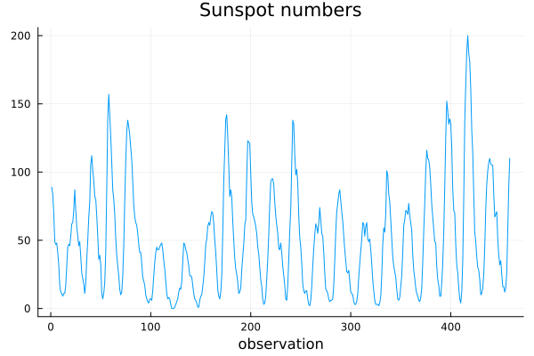
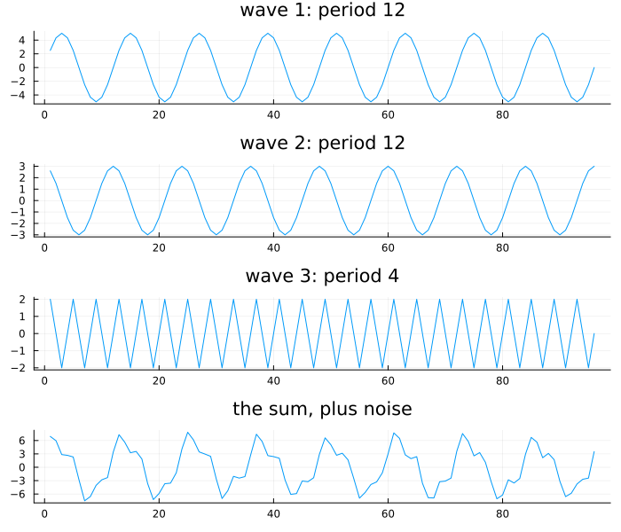
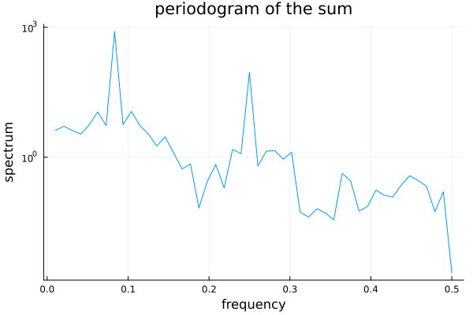
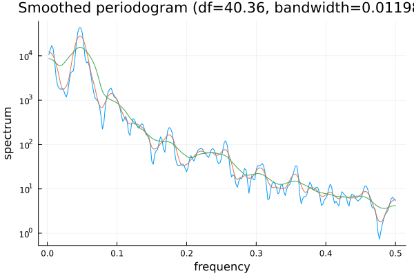
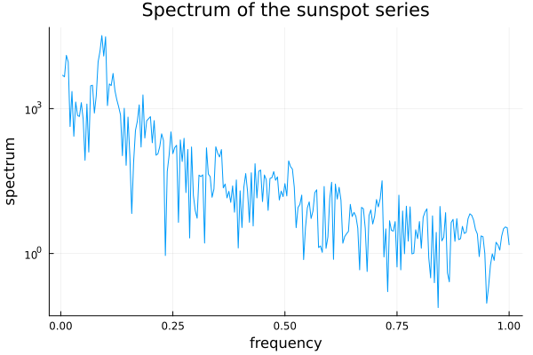
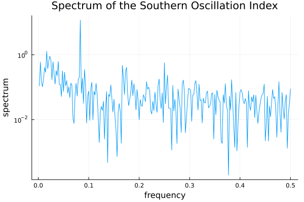
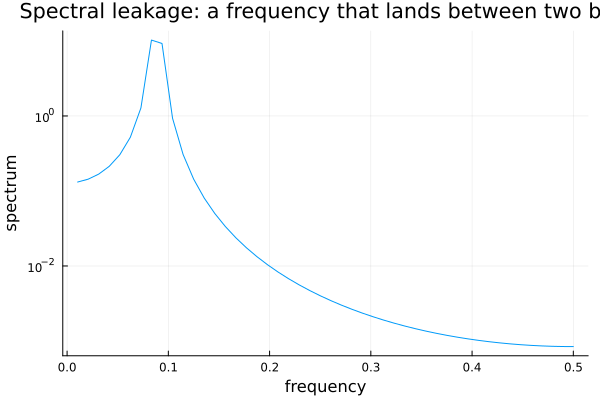
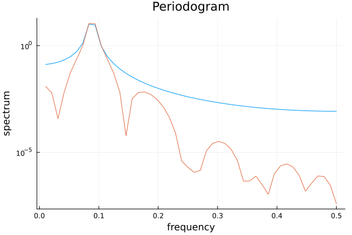

The Frequency Domain
using TSAnalytics, Plots
sunspotz = dataset("sunspotz")
plot(sunspotz.value; title="Sunspot numbers", xlabel="observation", legend=false)
Four hundred and fifty-nine observations, and something clearly repeats. Counting peaks by eye gives something in the general neighbourhood of a decade, but the peaks are uneven in height and not evenly spaced, so any specific number written down from this picture alone would be a guess dressed up as a measurement. Chapter 5's ACF would confirm that something repeats without ever being able to say how often, with any precision, because the ACF only ever answers questions about lags, never about cycles per year. This chapter asks a different question of the same kind of data: not how related is this observation to one k steps back, but what rhythms is this series actually made of — and the answer, when it exists, is often far more precise than anything a lag-based picture can offer.
Every series is a sum of waves
using Random
Random.seed!(42)
n = 96
t = 1:n
w1 = 5 .* sin.(2π .* t ./ 12)
w2 = 3 .* cos.(2π .* t ./ 12)
w3 = 2 .* sin.(2π .* t ./ 4)
noise = randn(n) .* 0.5
x = w1 .+ w2 .+ w3 .+ noise
p1 = plot(w1; title="wave 1: period 12", legend=false)
p2 = plot(w2; title="wave 2: period 12", legend=false)
p3 = plot(w3; title="wave 3: period 4", legend=false)
p4 = plot(x; title="the sum, plus noise", legend=false)
plot(p1, p2, p3, p4; layout=(4,1), size=(700,600))
The sum, in the bottom panel, looks nothing like any of its three components. Handed only that bottom panel, recovering the three waves underneath it is not an obvious thing to attempt — and yet it is entirely possible, because sinusoids at different frequencies are mathematically orthogonal, each one carrying its own independent share of the total variance with no overlap between them. That decomposition is exactly what a periodogram computes.
r = periodogram(x; taper=0.1)
plot(r; title="periodogram of the sum")
top = sortperm(r.spec, rev=true)[1:2]
for i in top
println("period = $(round(1/r.freq[i], digits=1)) observations, spec = $(round(r.spec[i], digits=1))")
endperiod = 12.0 observations, spec = 794.7
period = 4.0 observations, spec = 91.5Two spikes stand well clear of everything else, at periods of 12 and 4 observations — exactly the two periods used to build the series, with nothing assumed about the data going in. The vertical axis is variance, so a spike's height is literally the share of the series' total variance that wave accounts for; the period-12 component (built from two waves sharing that period) dominates, exactly as it should.
Why more data does not help
using Statistics
for n in (128, 1024, 8192)
Random.seed!(1)
xn = randn(n)
rn = periodogram(xn)
m, s = mean(rn.spec), std(rn.spec)
println("n=$n: mean=$(round(m,digits=3)) sd=$(round(s,digits=3)) sd/mean=$(round(s/m,digits=3))")
endn=128: mean=0.901 sd=0.847 sd/mean=0.939
n=1024: mean=1.012 sd=0.994 sd/mean=0.982
n=8192: mean=1.013 sd=1.001 sd/mean=0.989This is the single most counterintuitive fact in the chapter, and it deserves to be read slowly. A sixty-four-fold increase in sample size — from 128 observations to 8,192 — leaves the ratio of standard deviation to mean essentially unmoved, sitting close to 1.0 throughout. The mean itself does converge nicely toward the true spectral density of white noise; the scatter around that mean does not shrink at all. Every other estimator built so far in this book gets better with more data. The raw periodogram does not, and the reason is structural rather than a defect to be engineered away: doubling the length of a series doubles the number of distinct frequencies being estimated at the same time, so each individual estimate is still built from roughly the same amount of information as before. More data buys twice as many equally noisy estimates, not the same number of better ones. This is exactly why smoothing a periodogram is not an optional refinement — it is the only way the raw estimate becomes usable at all.
rs1 = spectral_density(sunspotz.value, [3,3])
rs2 = spectral_density(sunspotz.value, [7,7])
rs3 = spectral_density(sunspotz.value, [15,15])
plot(rs1; label="spans=[3,3]")
plot!(rs2; label="spans=[7,7]")
plot!(rs3; label="spans=[15,15]")
for (spans, r) in (([3,3], rs1), ([7,7], rs2), ([15,15], rs3))
println("spans=$spans: df=$(round(r.df,digits=2)) bandwidth=$(round(r.bandwidth,digits=5))")
endspans=[3, 3]: df=6.99 bandwidth=0.00217
spans=[7, 7]: df=17.66 bandwidth=0.00528
spans=[15, 15]: df=40.36 bandwidth=0.01198Averaging neighbouring periodogram values together trades frequency resolution for statistical stability — precisely the trade Chapter 4 made in the time domain, and the connection is worth stating plainly: smoothing a spectrum and smoothing a series are the same operation, applied in two different places. df and bandwidth are how a smoothed estimate declares, numerically, how much smoothing it actually did — df behaves like the degrees of freedom behind the estimate at each frequency, and bandwidth is the width of frequency being blended into every point on the curve. A wider span buys a smoother-looking curve and a wider bandwidth, at the cost of blurring together frequencies that a narrower span would have kept apart.
Real spectra
rsun = periodogram(sunspotz.value; xfreq=2.0)
peak_idx = argmax(rsun.spec)
plot(rsun; title="Spectrum of the sunspot series")
println("peak at $(round(1/rsun.freq[peak_idx], digits=2)) years")peak at 10.91 yearsA single, clear peak, and reading its frequency directly off the picture gives a period of 10.91 years — startlingly close to the well-known eleven-year sunspot cycle, recovered here from nothing but the series itself. Chapter 5's ACF could show that this series repeats; it could never have produced this number. That is the whole payoff of this chapter, and it is worth letting it land before moving on.
soi = dataset("soi")
rsoi = periodogram(soi.value)
plot(rsoi; title="Spectrum of the Southern Oscillation Index")
top3 = sortperm(rsoi.spec, rev=true)[1:3]
for i in top3
println("period = $(round(1/rsoi.freq[i], digits=1)) months (= $(round(1/rsoi.freq[i]/12, digits=2)) years), spec = $(round(rsoi.spec[i], digits=2))")
endperiod = 12.0 months (= 1.0 years), spec = 11.67
period = 60.0 months (= 5.0 years), spec = 1.28
period = 43.6 months (= 3.64 years), spec = 0.9Two genuinely different features here, not one. The dominant spike sits at a period of twelve months — the annual cycle, sharp and unmistakable. Beneath it, spread across a broader, lower-frequency band around three to five years, sits the signature of the El Niño cycle. That it is a band rather than a second sharp spike is informative in its own right: El Niño is quasi-periodic, recurring on a genuinely irregular schedule rather than a fixed one, and a broad band represents that honestly where a single clean frequency would have overstated how regular the cycle actually is.
freq_bad = 8.5/96
x_leak = sin.(2π .* freq_bad .* (0:95))
rl0 = periodogram(x_leak; taper=0.0)
plot(rl0; title="Spectral leakage: a frequency that lands between two bins")
Instead of one clean spike, the energy has split across two adjacent bins with real skirts spreading either side of both — checking directly, the two tallest bins carry 10.3 and 9.2 respectively, with the next bins out still carrying 1.3 and 0.5, none of it present anywhere in the true signal. This is not measurement error. It is what happens whenever a finite record is implicitly treated as one period of a signal that repeats forever, and the signal's actual frequency does not happen to land on a frequency the record's own length can represent exactly. Tapering — smoothly downweighting the observations near each end of the series before transforming it — is the standard remedy, and it brings the chapter to its disagreement.
Whose taper?
rl1 = periodogram(x_leak; taper=0.1)
plot(rl0; label="taper=0")
plot!(rl1; label="taper=0.1")
Base R's spec.pgram tapers by default — taper = 0.1, a 10% split-cosine-bell applied without being asked. Shumway and Stoffer's own companion package, astsa::mvspec, sets the same argument to 0 by default deliberately — its own documentation states plainly that this is meant to force "conscious tapering" rather than let it happen silently. Two authoritative sources on the identical computation, two opposite defaults, both held by people who know exactly what they are doing. This package follows astsa: periodogram defaults to taper=0.0, disclosed directly in its own docstring rather than left for a reader to discover by surprise. A reader porting code from base R will get different numbers here unless taper=0.1 is passed explicitly.
Worth a second mention alongside it: detrend=true is the shared default in both R and this package, and it does more than most users expect — it removes a linear trend (which also removes the mean) before anything else happens. A series that has already been differenced earlier in a workflow is, without anyone intending it, about to be detrended a second time.
Indian monsoon rainfall carries a dominant annual frequency, which a spectrum recovers immediately and without ambiguity. It also shows quasi-periodic variation on a longer scale tied to El Niño — the same broad, low-frequency band the soi spectrum displayed above, not a Pacific curiosity but a genuine and well-documented driver of Indian agricultural outcomes. soi earns its place in this book on that basis alone, not merely as a borrowed American series.
Where this leaves you
You can now find a period without knowing it in advance, and you know precisely why the raw estimate has to be smoothed before it says anything trustworthy. What none of Part I has addressed yet is an assumption running underneath every technique so far: that a series behaves the same way at its start as at its end — the same mean, the same variance, the same rhythms throughout. That assumption has a name, and it is very often false. Chapter 7 takes on one particular way it fails.